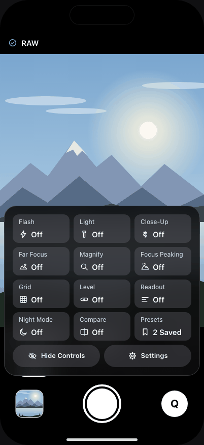
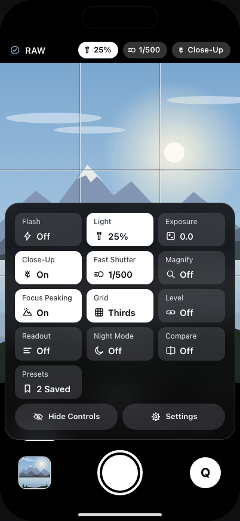
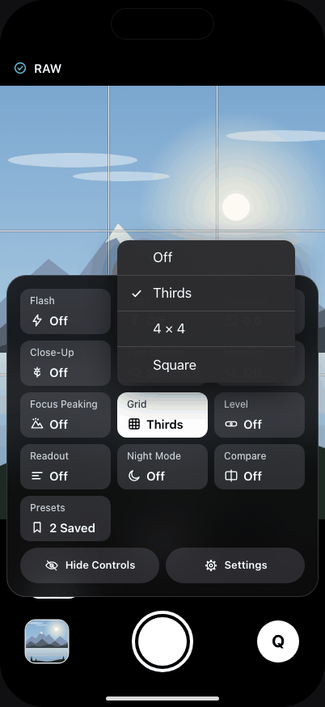
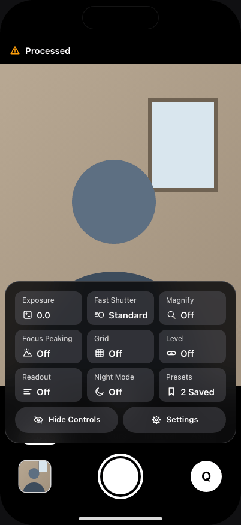
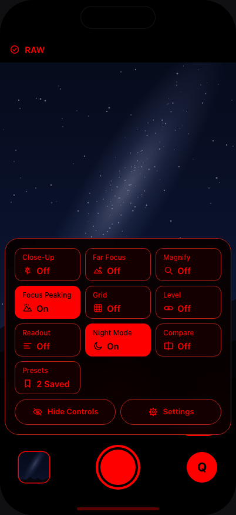
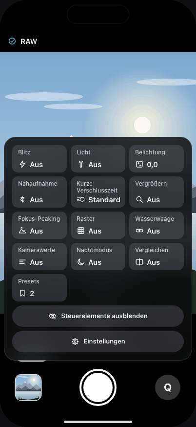

Q, the quick menu
Design version: 1.0.0, direction B · Reach (2026-11-17). Planned design for release 1.0.0; the app is built to match it. Includes the Settings structure and the device coverage accepted on 2026-11-17 (SETTINGS-PLAN.md), and the Last Photo viewer and the Photo Details redesign of 2026-11-18.
Q opens one panel of tiles above the shutter row. Every tile is an existing setting: its name, a symbol and its value. A tile that is on is filled white and says so in words. All tiles are in the one panel; there is no second page and no editing of the tiles. Tiles a lens or device cannot offer are left out.
Order: Flash, Light, Exposure, Close-Up, Far Focus, Fast Shutter, Magnify, Focus Peaking, Grid, Level, Readout, Night Mode, Compare, Presets. Focus Peaking is a tile for the existing switch, in full auto and manual (accepted 2026-11-17): it is used while shooting and was four taps away in full auto.
- A two-state tile switches on a tap and the panel stays open, so several can be changed. A tile with more values opens a system menu.
- Exposure, Presets, Hide Controls and Settings close the panel, as do the shutter, a lens, a tap on the picture, or Q again.
- With four rows of tiles (Manual Controls on, or a device without one of the tiles) the panel covers the lens row, the drive strip and about 45% of the picture; with all thirteen tiles in full auto it has five rows and covers about 57%.






